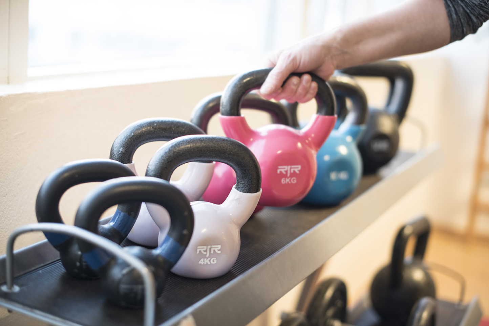

Dæmi
DæmiVelkomin í Styrk
Hér gæti birst kynning á starfinu og móttökunni.

Sjúkraþjálfun frá 1999
Einstaklingsmeðferð og hópþjálfun á Höfðabakka 9. Hjá Styrk starfa sjúkraþjálfarar með mismunandi sérsvið og áherslur.
Kynnstu Styrk

Tækjasalur, hópþjálfun og einstaklingsmeðferð á Höfðabakka 9.
Skoða þjónustunaSýnishorn úr vikunni. Hér sjást fyrstu þrír tímarnir hvern dag fyrir valinn hóp. Skoðaðu alla tímana í stundaskránni.
Engir birtir tímar fyrir þetta val.
Engir birtir tímar fyrir þetta val.
Engir birtir tímar fyrir þetta val.
Engir birtir tímar fyrir þetta val.
Engir birtir tímar fyrir þetta val.
Engir birtir tímar fyrir þetta val. Veldu aðra daga eða hóp.
Samkvæmt birtu stundaskránni á styrkurehf.is, sótt 27. október 2026. Tækjasalstímar eru sóttir af síðu tækjasalshópa. Staðfestu tíma og þátttöku í síma 587 7750.
Hefja meðferðÖll stundaskráin
Dæmi um uppsetningu. Engar staðfestar fréttir Styrks fundust á vefnum.
DæmiHér gæti birst kynning á starfinu og móttökunni.
DæmiHér gæti birst frétt um hópastarfið.
Hér gæti birst viðtal við starfsfólk.
Staðsetning og opnun
Tækjasalur: mánudaga til fimmtudaga kl. 07:45 til 18:00. Föstudaga kl. 07:45 til 17:00. Lokað um helgar.
Annar opnunartími gildir yfir hátíðir og sumartímann.